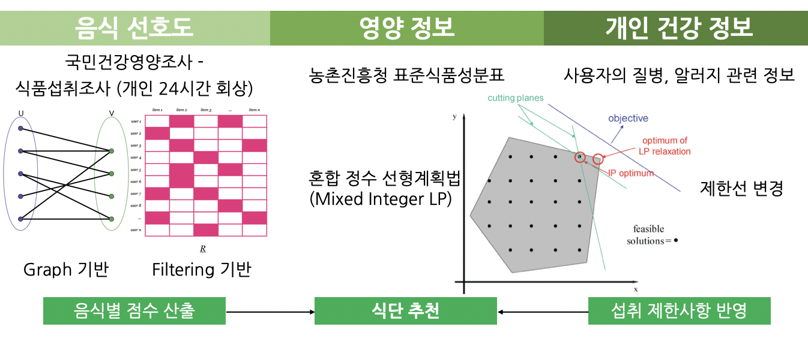

Cornell University Autonomous Underwater Vehicle (CUAUV) Software Team
- Finalist in Robonation's 2022 International Robosub competition, placing 6th out of 40 international teams
- Programmed vision modules that identifies simple colored mission elements and 2D image mission elements using
lab color space, filtering process, and image matching algorithms such as Scale-Invariant Feature Transform,
Speed Up Robust Feature, and Oriented FAST and Rotated BRIEF technique.
- Created mission modules that enables autonomous buoy searching, centering, ramming, and torpedo shooting tasks
- Developed a protocol to send over obj files and configuration files from stack and render objects in the unity
simulator with WebSocket++
- Currently working on automated tests for mission simulations
Big Care AI Lab

-
Developed a food recommendation system considering ingredient preference and individual health factors for
health care app company advised under Professor Song Min
-
Presented patent for food recommendation system regarding user preference using graph algorithms and matrix
factorization to patent attorney
-
Engaged in data analysis of nutrition factors and food consumption pattern of individuals using Pandas DataFrame
and Scipy